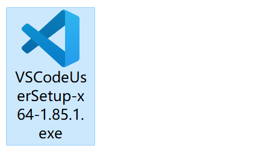
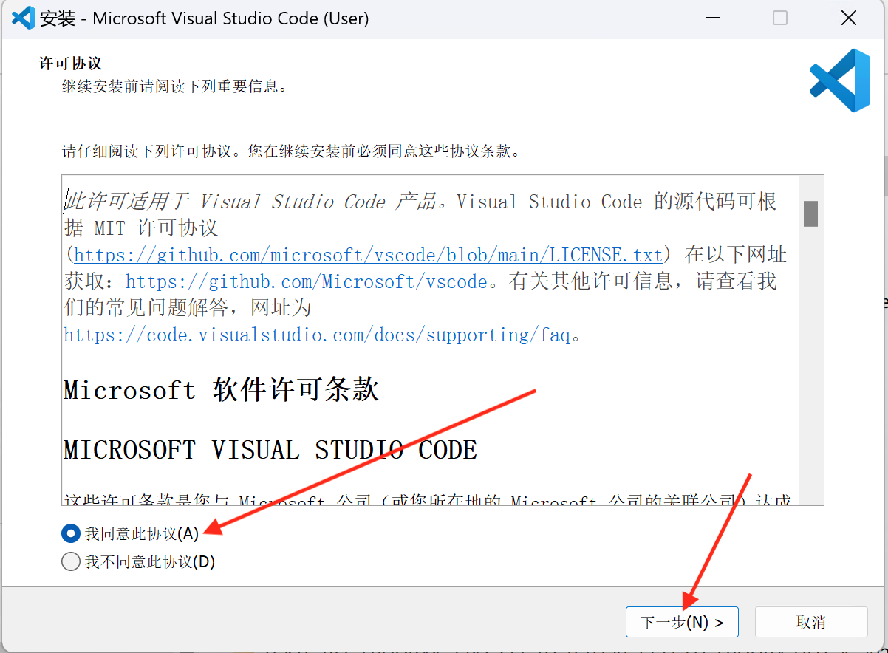
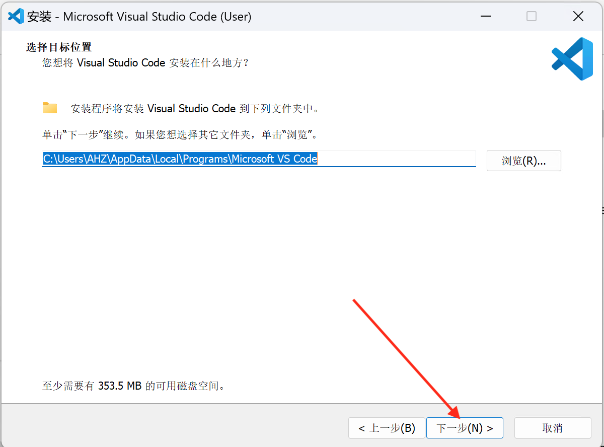
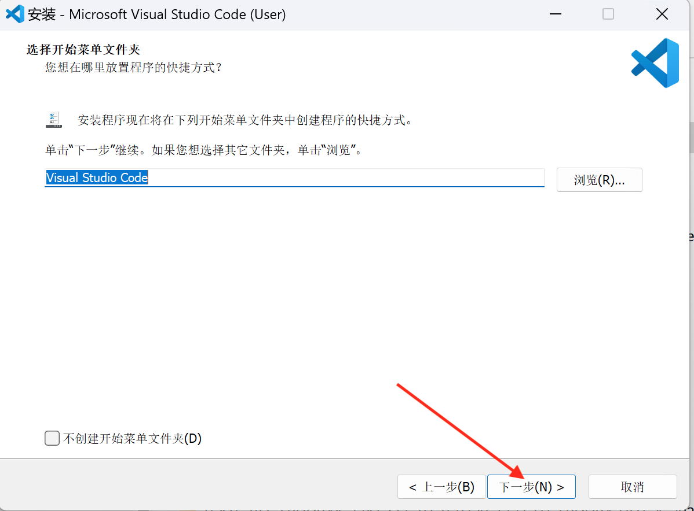
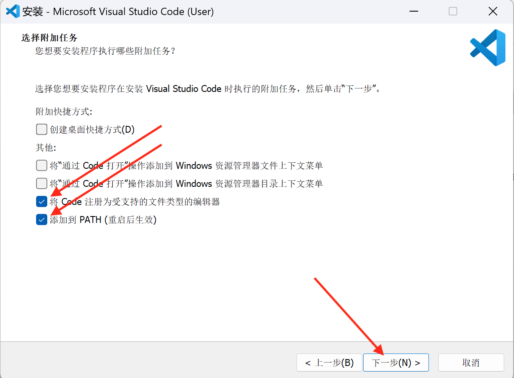
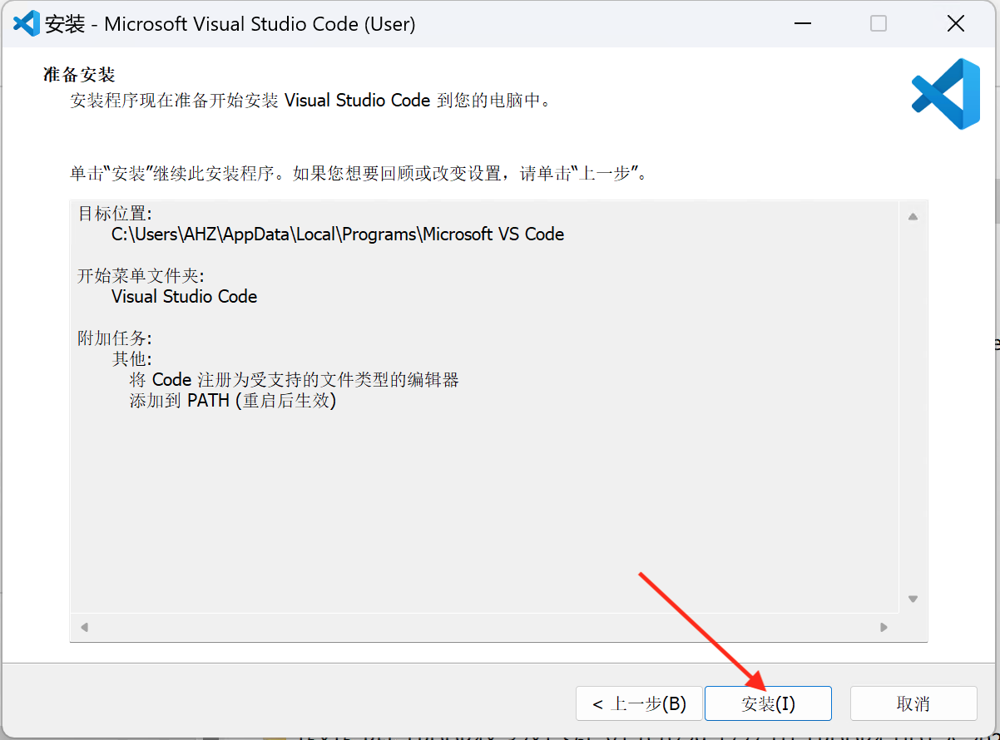
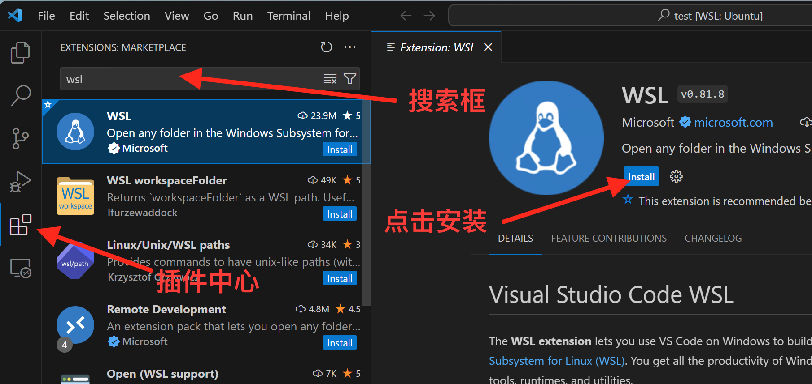
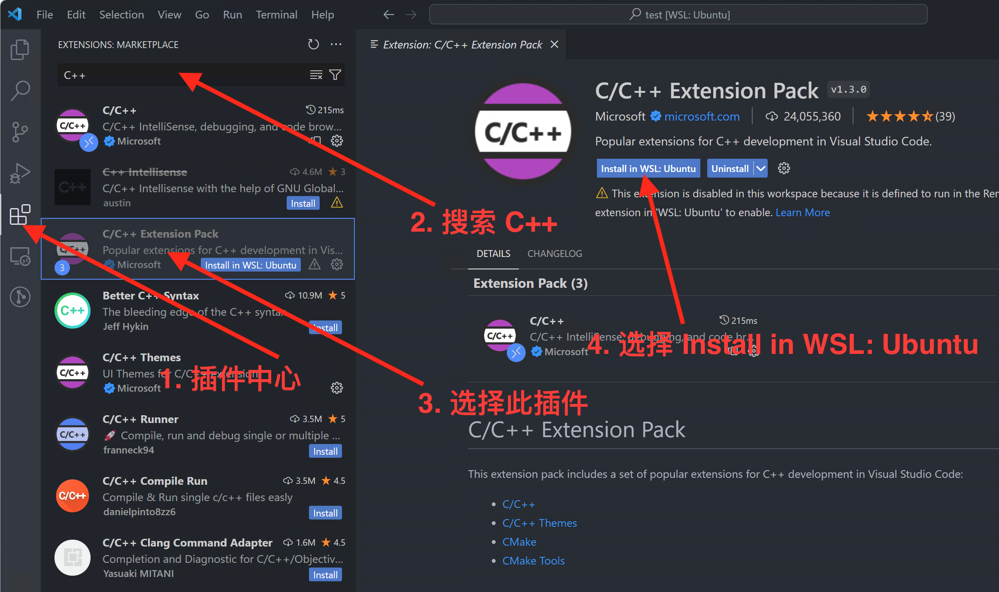
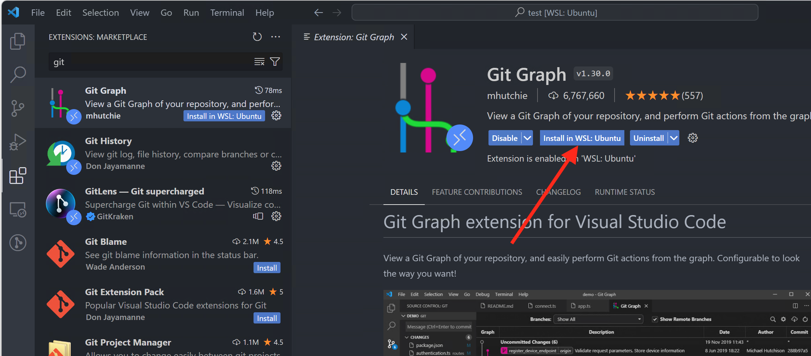

VS Code CMake C++环境搭建¶
请仔细阅读本文后再进行实操
VS Code是什么？¶
VS Code 是由微软推出的一款轻量级但功能强大的源代码编辑器，支持 Windows、macOS 和 Linux 操作系统。它内置了对 JavaScript、TypeScript 和 Node.js 的支持，并拥有丰富的其他语言和运行时扩展生态系统（例如 C++、C#、Java、Python、PHP、Go、.NET）。VS Code近些年来越来越受开发者欢迎，是因为它的身上存在这么几个亮点：
-
第一是打开速度快，用VS Code来打开一个项目，基本上可以说是秒开，即使是很大的项目，也可以非常快的被打开。
-
第二是支持的编程语言非常多，VS Code在初始状态（即不按装任何的扩展的情况）下对Web前端开发、Node.js开发等语言的开发都有很好的支持，至于其它的一些编程语言，比如说：Java、Python、Go、Ruby、C#、C/C++等等，只要安装相应的扩展就能很好的完成开发环境的搭建。
-
第三是拥有丰富的扩展，VS Code的扩展十分丰富，首先从量上来看，VS Code的扩展数量已经上万，涵盖了方方面面，你能想到的它都有。
接下来，我们来看两个可能会遇到的并且有点令人迷惑的英文词汇：Visual Studio Code和Visual Studio。其实VS Code的全称叫做 Visual Studio Code，作为微软于2015年推出的一款代码编辑器，他还有一位老大哥，叫做Visual Studio。所以，Visual Studio Code和Visual Studio是两款不同的代码编辑器。
Windows 安装 VS Code并连接到 WSL 环境中¶
通过前面的教程，你应该在你电脑安装好了 WSL 环境，接下来就需要你搭建一个用于开发 C++ 程序的 VS Code 开发环境。
步骤 1 - 下载 VS Code¶
VS Code 的下载地址：Download VS Code
步骤 2 - 安装 VS Code¶
双击点开下载好的 VS Code 安装包




请注意
请一定要勾选 “添加到PATH(重启后生效)”


步骤 3 - 重启电脑¶
根据 VS Code 安装界面可知，环境变量需要重启计算机后才生效，因此此步骤需要对你的计算机进行重启。
步骤 4 - 安装 WSL 插件¶
打开 VS Code, 在插件中心搜索 WSL , 搜索到 WSL 插件后点击“install”进行安装。

安装好 WSL 插件后，关闭 VS Code
步骤 5 - WSL 命令行中启动 VS Code¶
打开 VS Code 命令行，输入如下命令，第一次打开需要进行环境初始化，你需要等待一两分钟。 一旦初识化结束，第二次打开便会很快。
code .
步骤 6 - 安装 C++ 开发必备 VS Code插件¶
主要会用到如下几个插件
- C/C++ : 提供c++调试功能和一些智能提示
- CMake : 提供CMake支持
- CMake Tools : 拓展CMake功能
- Git Graph : Git 图形化显示和操作
此处我们选择 C/C++ Extension Pack 插件，这个插件包含了 C/C++, CMake, CMake Tools, C/C++ Themes四个插件。

安装到WSL环境中
此处一定要选择 Install in WSL: Ubuntu，否则插件就安装到 Windows 宿主环境中，并不能在 WSL 环境中起作用。

到此我们在 WSL环境中 VS Code 开发C++所需的环境和插件已安装好，请阅读“配置一个工程项目”小节的内容。
Ubuntu 安装 VS Code¶
MacOS 安装 VS Code¶
配置一个工程项目¶
在开始这一部分的教程时，请先阅读 CMake基础 的教程，了解基础的cmake知识， 同时阅读 Linux文件和文件夹操作的教程，接下来我们需要用到一些Linux的基础命令。